Within the tidyverse heatmaps can be generated via
ggplot2::geom_tile() but is sometimes hard to reach the
versatility and beauty of a genuine heatmap function.
tidyheatmaps provides a tidyverse-style interface to the
powerful heatmap package pheatmap by @raivokolde and enables the
generation of complex heatmaps from tidy data with minimal code.
Data requirements
tidyheatmap() requires tidy data in long format, see tidyverse.
As an example we will use the gene expression data set
data_exprs. In the tidyverse lingo the columns of a data
frame are called variables. The variable
expression contains the numeric values to be color-coded in
the heatmap. Furthermore we will use the variables sample
for heatmap columns and external_gene_name for heatmap
rows.
glimpse(data_exprs)
#> Rows: 800
#> Columns: 9
#> $ ensembl_gene_id <chr> "ENSMUSG00000033576", "ENSMUSG00000033576", "ENSMUS…
#> $ external_gene_name <chr> "Apol6", "Apol6", "Apol6", "Apol6", "Apol6", "Apol6…
#> $ sample <chr> "Hin_1", "Hin_2", "Hin_3", "Hin_4", "Hin_5", "Ein_1…
#> $ expression <dbl> 2.203755, 2.203755, 2.660558, 2.649534, 3.442740, 5…
#> $ group <chr> "Hin", "Hin", "Hin", "Hin", "Hin", "Ein", "Ein", "E…
#> $ sample_type <chr> "input", "input", "input", "input", "input", "input…
#> $ condition <chr> "healthy", "healthy", "healthy", "healthy", "health…
#> $ is_immune_gene <chr> "no", "no", "no", "no", "no", "no", "no", "no", "no…
#> $ direction <chr> "up", "up", "up", "up", "up", "up", "up", "up", "up…Basic usage
The basic layout of the heatmap relies on the parameters
rows, columns and values. You can
think of them like aesthetics in ggplot2::ggplot(), similar
to something like
aes(x = columns, y = rows, fill = values).
tidyheatmap(data_exprs,
rows = external_gene_name,
columns = sample,
values = expression
)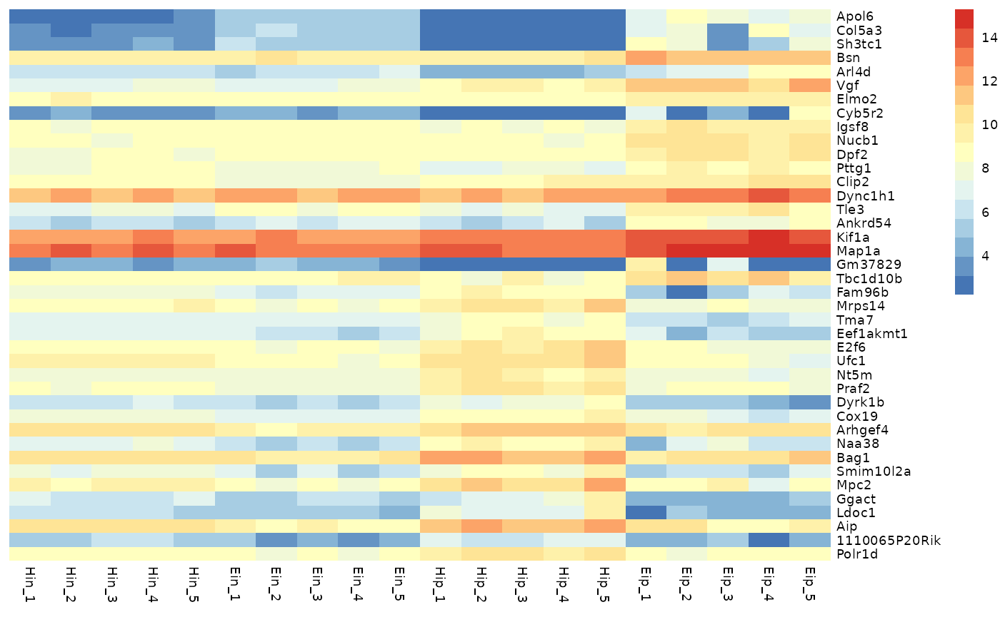
Data scaling
With the parameter scale you can activate data scaling
for "row" or "column". By default data scaling
is turned off scale = "none".
tidyheatmap(data_exprs,
rows = external_gene_name,
columns = sample,
values = expression,
scale = "row"
)
Ordering
Rows and columns in the heatmap will appear in the same order as in
the tidy data frame used as input. For example, to order rows and
columns alphabetically, just use the dplyr::arrange().
data_exprs %>%
arrange(external_gene_name, sample) %>%
tidyheatmap(rows = external_gene_name,
columns = sample,
values = expression,
scale = "row"
)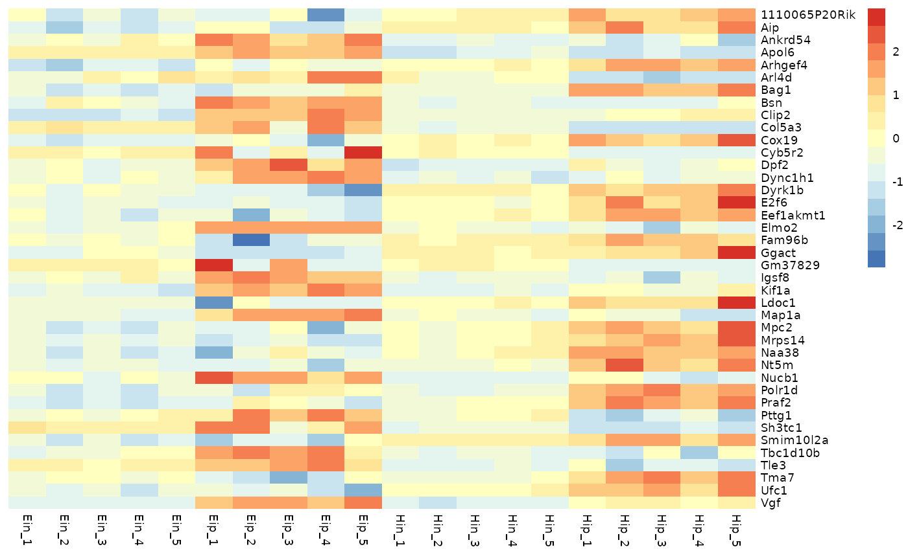
Color legend
You can customize the number of colors color_legend_n in
the color legend. The default is 15.
tidyheatmap(data_exprs,
rows = external_gene_name,
columns = sample,
values = expression,
scale = "row",
color_legend_n = 5
)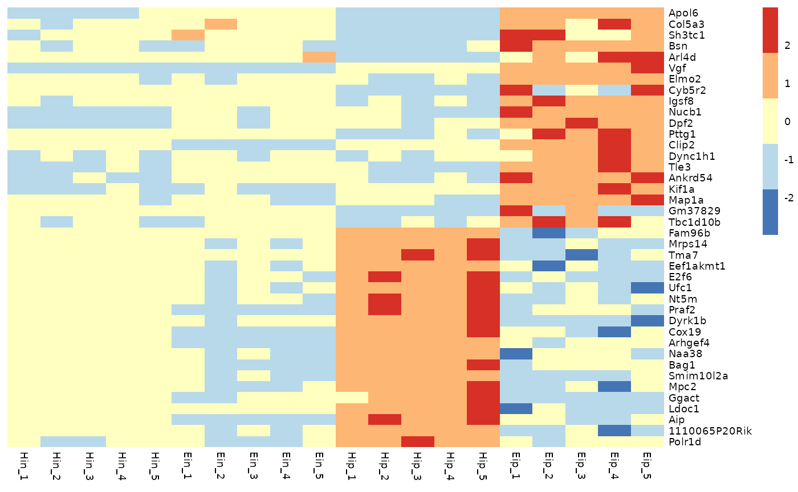
You can also define the minimum and maximum values of the color
legend. Values smaller then the color_legend_min will have
the lowest color, values bigger than the color_legend_max
will get the highest color.
tidyheatmap(data_exprs,
rows = external_gene_name,
columns = sample,
values = expression,
scale = "row",
color_legend_min = -1,
color_legend_max = 1
)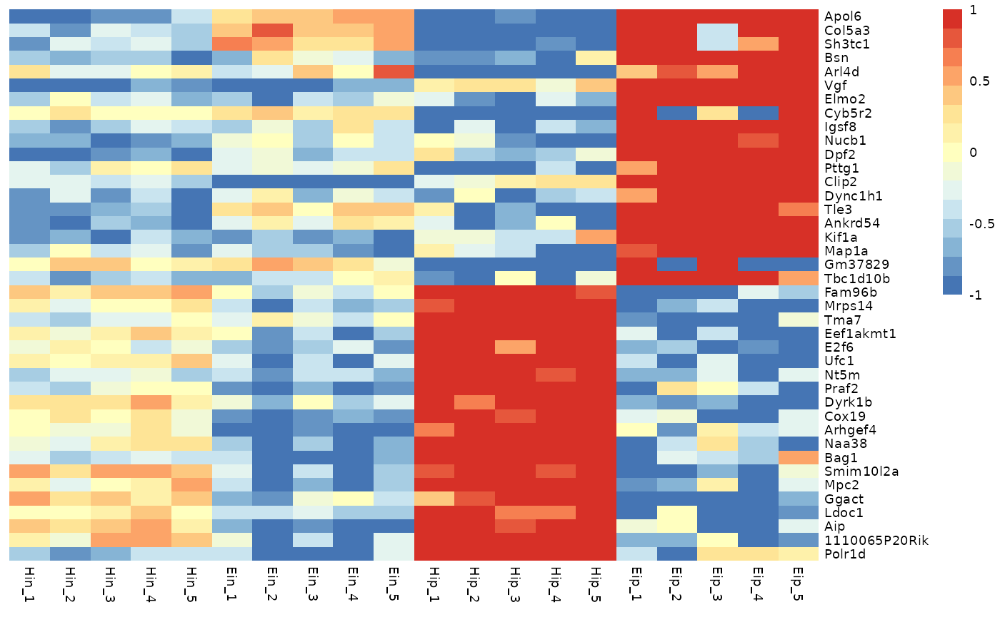
Of course, you can also change the colors themselves.
The number of colors you provide does not have to match
color_legend_n. The color legend is automatically adjusted
to have color_legend_n colors (the default is
15).
tidyheatmap(data_exprs,
rows = external_gene_name,
columns = sample,
values = expression,
scale = "row",
colors = c("#145afc","#ffffff","#ee4445")
)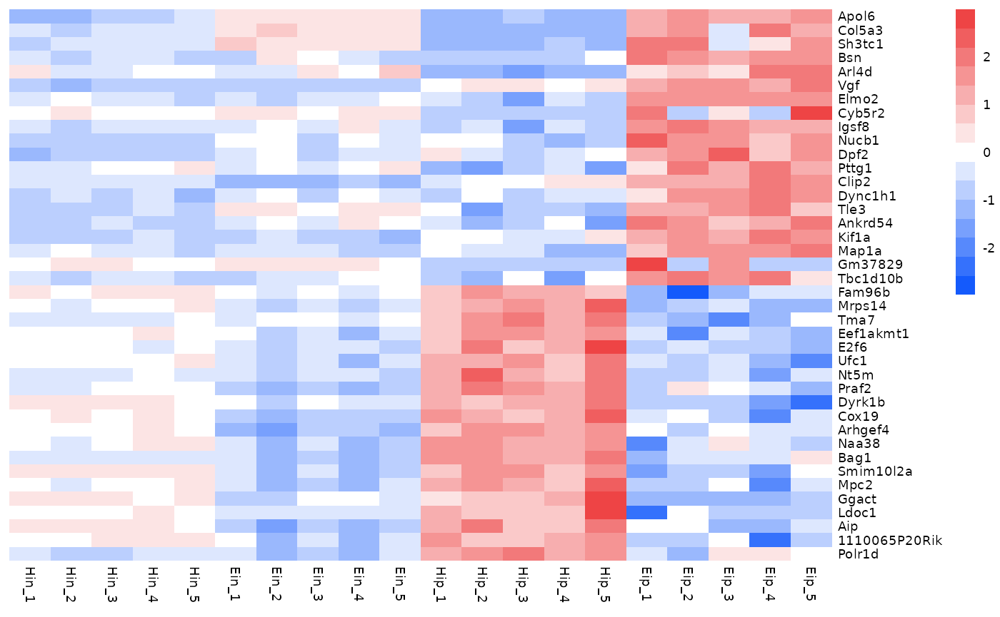
Annotations
Annotations can be added for both rows and
columns via annotation_row and
annotation_col, respectively. Just specify the
corresponding variables in the tidy data frame. If you want more then
one variable for annotation just combine them by
c(var1, var2, var3).
tidyheatmap(data_exprs,
rows = external_gene_name,
columns = sample,
values = expression,
scale = "row",
annotation_col = c(sample_type, condition, group),
annotation_row = c(is_immune_gene, direction)
)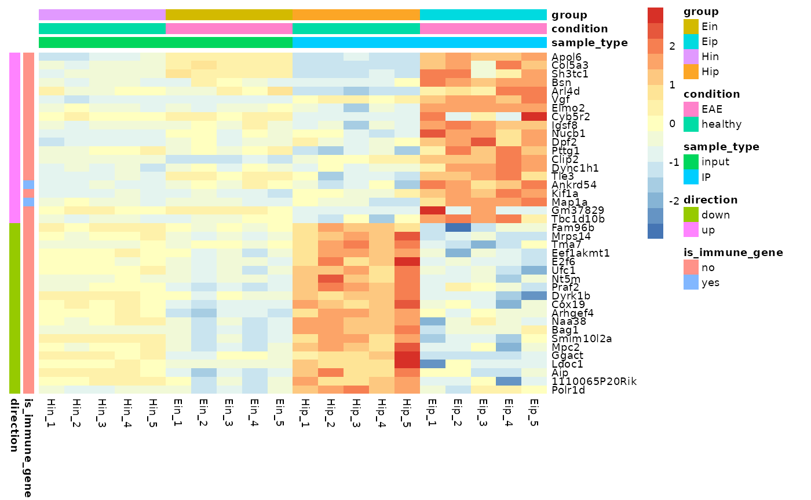
Customize annotations colors
You can provide a list of named vectors to take control over the
annotations colors annotation_colors.
ann_colors <- list(
condition = c(EAE = "#BD79B4", healthy = "#F5CEF2"),
group = c(Ein = "#C14236", Eip = "#E28946", Hin = "#4978AB", Hip = "#98BB85"),
sample_type = c(input = "#BDBDBD", IP = "#7D7D7D"),
direction = c(down = "#5071DC", up = "#C34B6B"),
is_immune_gene = c(yes = "#B69340", no = "#FFFFFF")
)
tidyheatmap(data_exprs,
rows = external_gene_name,
columns = sample,
values = expression,
scale = "row",
annotation_col = c(sample_type, condition, group),
annotation_row = c(is_immune_gene, direction),
annotation_colors = ann_colors
)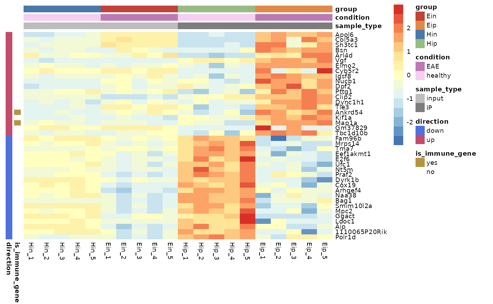
Gaps
Gaps can be added by specifying data frame variables that should be
used to generate the gaps. Only one variable can be chosen for each
gaps_row and gaps_col.
tidyheatmap(data_exprs,
rows = external_gene_name,
columns = sample,
values = expression,
scale = "row",
annotation_col = c(sample_type, condition, group),
annotation_row = c(is_immune_gene, direction),
annotation_colors = ann_colors,
gaps_row = direction,
gaps_col = group
)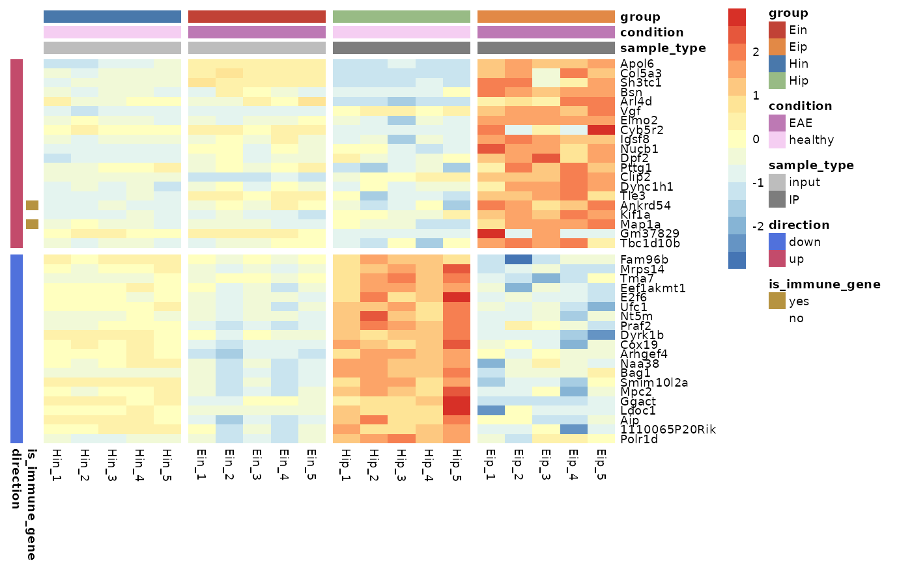
Cell dimensions
You can provide absolute cell dimensions (in points) via the
cellwidth and cellheight parameters.
tidyheatmap(data_exprs,
rows = external_gene_name,
columns = sample,
values = expression,
scale = "row",
annotation_col = c(sample_type, condition, group),
annotation_row = c(is_immune_gene, direction),
annotation_colors = ann_colors,
gaps_row = direction,
gaps_col = group,
cellwidth = 7,
cellheight = 7
)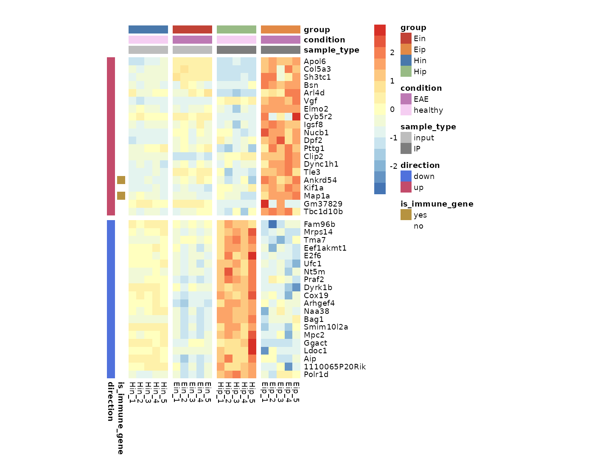
Show selected labels
To highlight a selection of row or column labels while hiding the
rest, you can use show_selected_row_labels or
show_selected_col_labels, respectively.
tidyheatmap(data_exprs,
rows = external_gene_name,
columns = sample,
values = expression,
scale = "row",
annotation_col = c(sample_type, condition, group),
annotation_row = c(is_immune_gene, direction),
annotation_colors = ann_colors,
gaps_row = direction,
gaps_col = group,
cellwidth = 7,
cellheight = 7,
show_selected_row_labels = c("Apol6","Bsn","Vgf","Fam96b","Bag1","Aip"),
)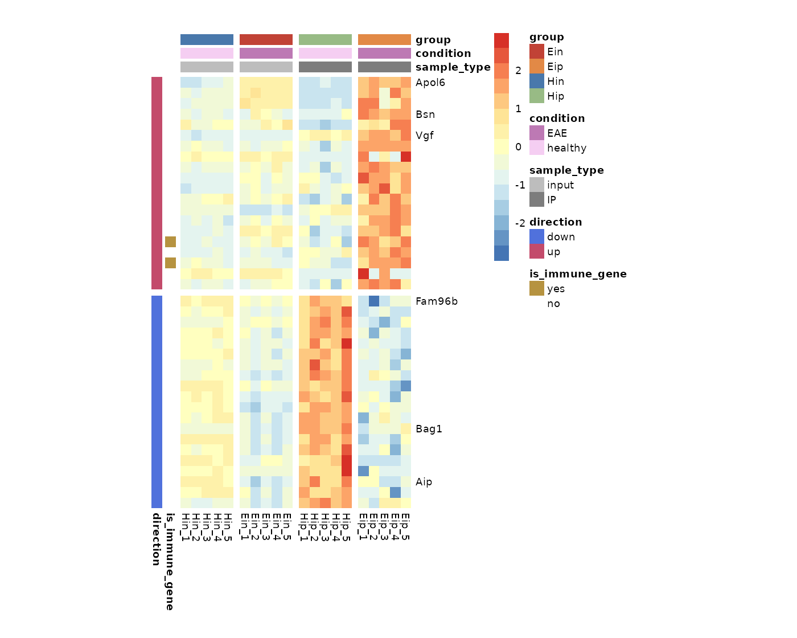
Write to file
You can use the parameter filename to write the heatmap
to file.
tidyheatmap(data_exprs,
rows = external_gene_name,
columns = sample,
values = expression,
filename = "my_heatmap.pdf"
)More features
pheatmap
provides even more features like clustering, dendrograms, text within
cells, et cetera. Additional available parameters can be found
in the documentation of tidyheatmap().
tidyheatmap(data_exprs,
rows = external_gene_name,
columns = sample,
values = expression,
scale = "row",
cluster_rows = TRUE,
cluster_cols = TRUE,
display_numbers = TRUE
)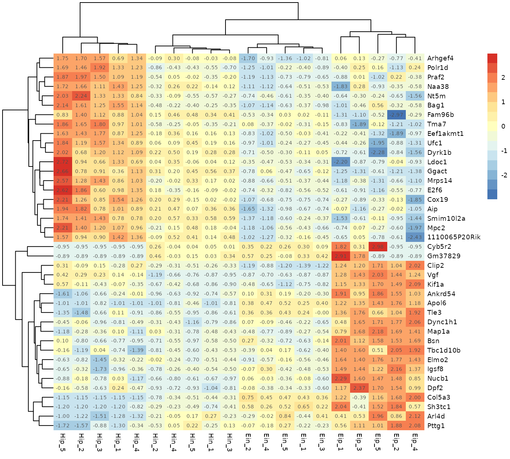